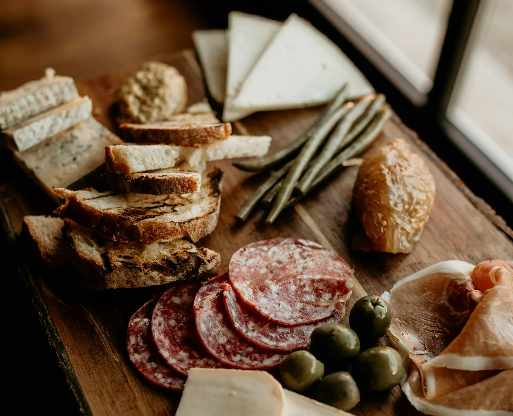
Una piccola trattoria in Via Annunziata, dove Antonio cucina la tradizione beneventana con i prodotti del territorio: salumi tagliati al coltello, pasta fatta a mano e il cinghiale, in tutte le sue forme.
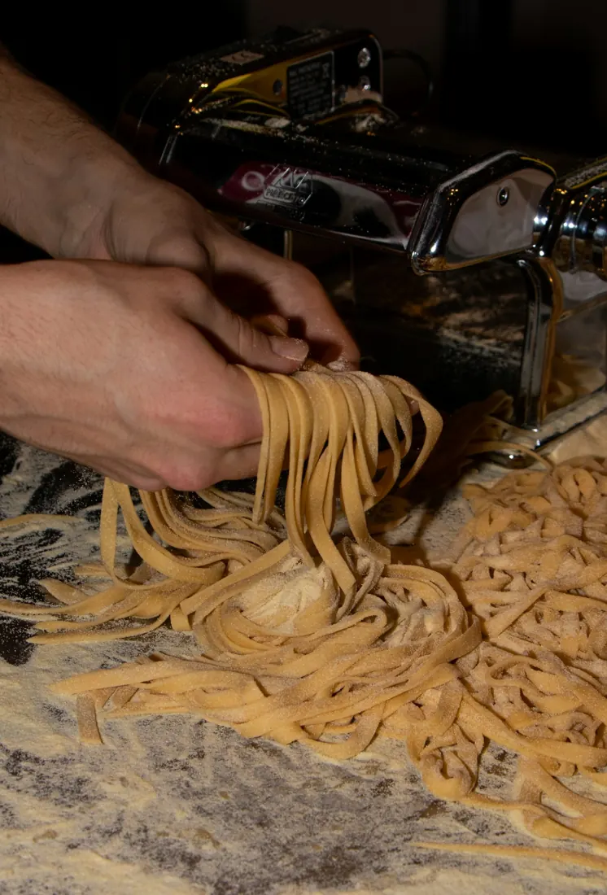
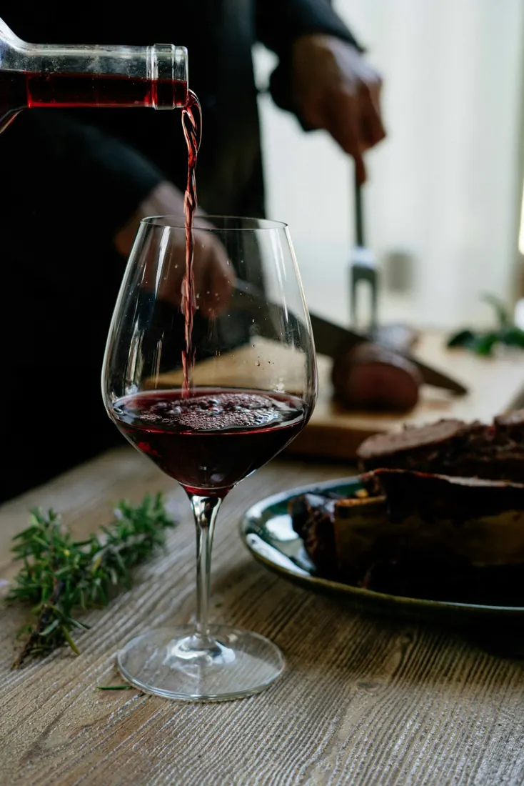
Il Cinghiale è un locale piccolo e raccolto in una stradina del centro storico, a due passi dal corso. Niente fronzoli: una sala sola, il profumo del sugo che arriva dalla cucina e Antonio che passa dai tavoli a raccontare cosa c'è oggi.
La cucina è quella contadina del Sannio, fatta da zero con prodotti del territorio: salumi, formaggi, pasta lavorata a mano, carni scelte. Il piatto che dà il nome alla trattoria è il cinghiale, cucinato come si faceva una volta.
✎ Spazio per la vostra storia: da quando siete aperti, chi c'è in cucina e in sala, da dove arrivano carni e salumi.
È il piatto che gli ospiti ricordano di più, e quello che ha dato il nome alla trattoria. Scegliete come assaggiarlo.
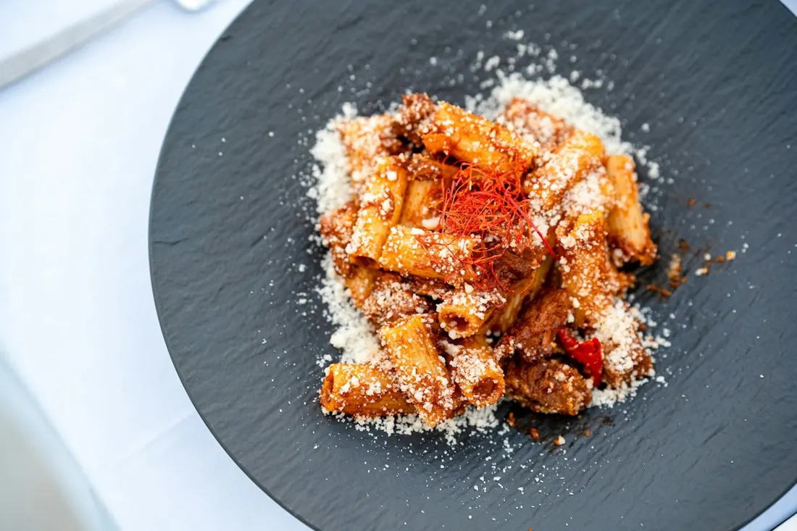
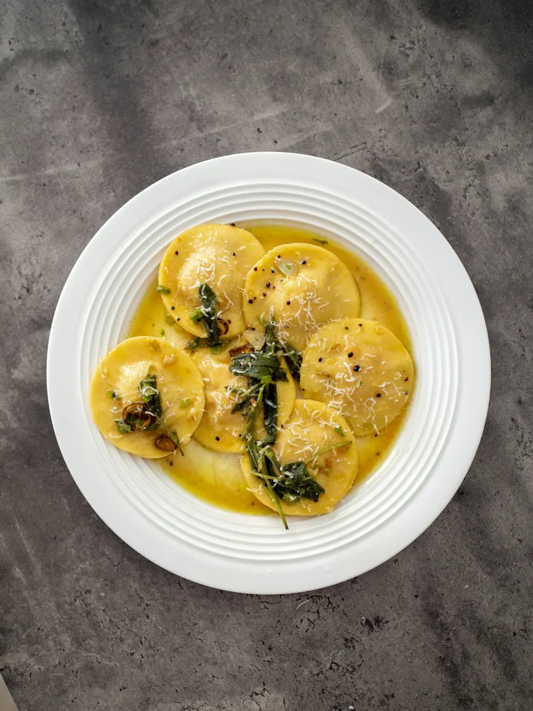
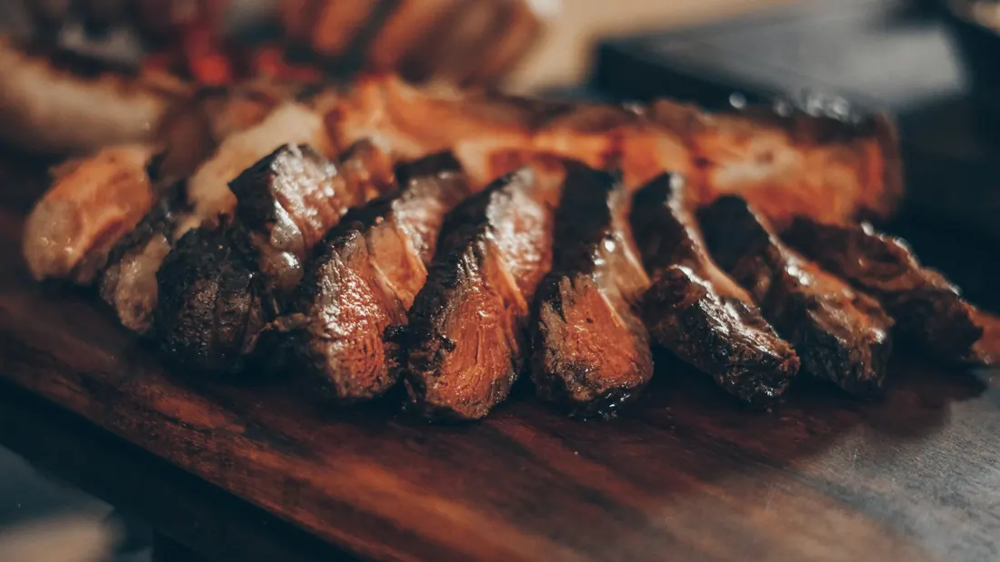
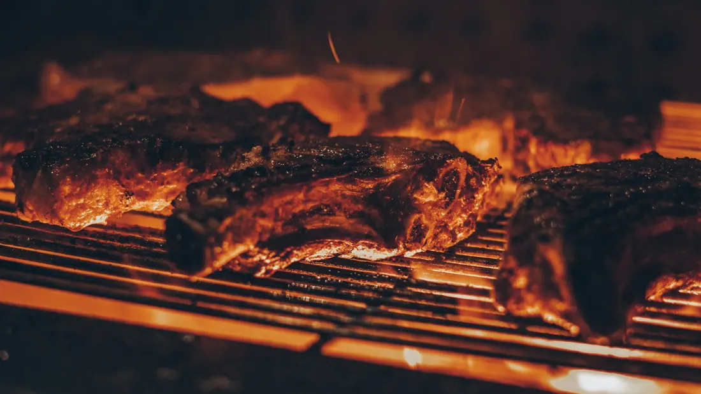
Foto illustrativeLa domenica a pranzo la trattoria si riempie di famiglie e di chi arriva apposta da fuori città. I tavoli sono pochi: meglio prenotare qualche giorno prima.
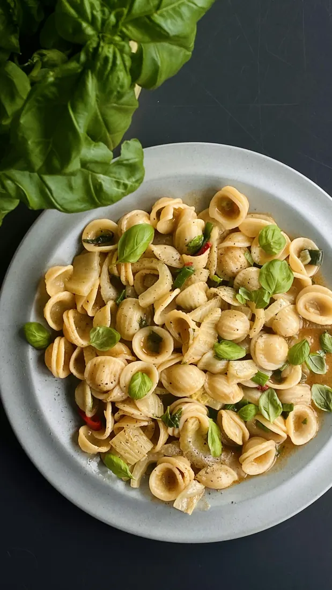
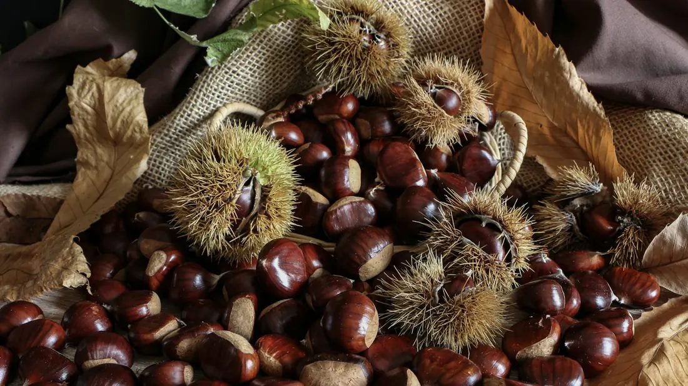
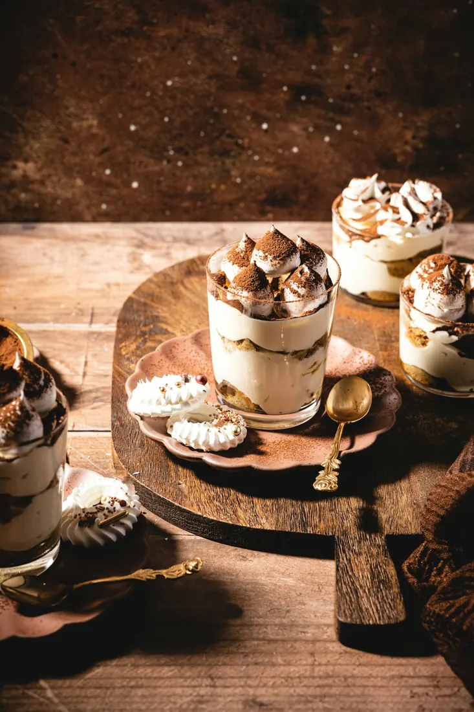
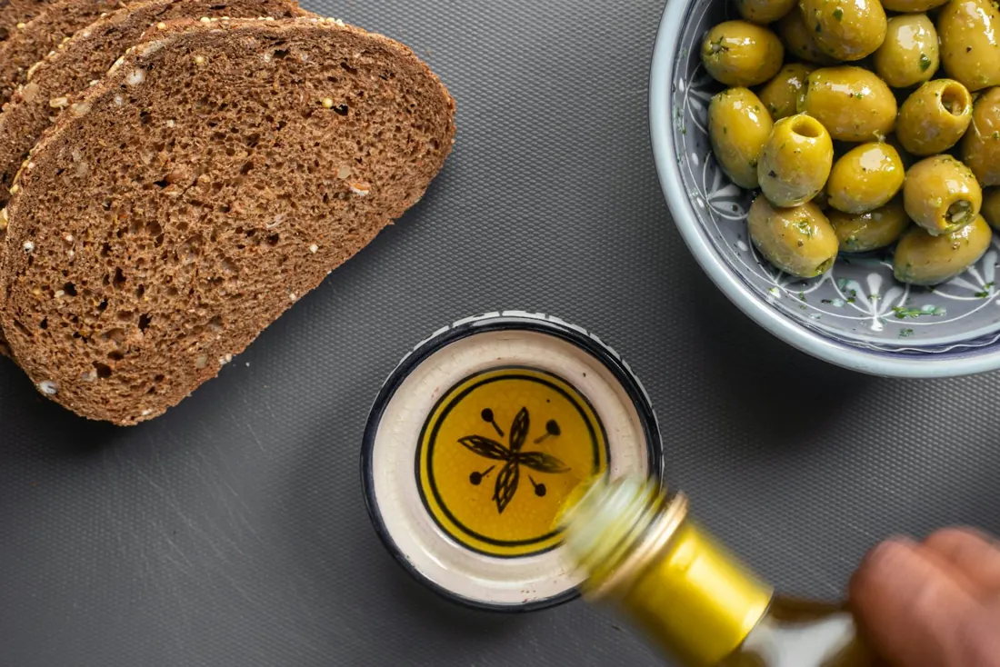
Cosa raccontano, in sintesi, gli ospiti su Google e Tripadvisor.
Le pappardelle al ragù sono il piatto più citato. Molti tornano per i salumi di cinghiale e per la bistecca cotta sulla piastra.
Tema ricorrente · Google e TripadvisorGli ospiti raccontano un titolare gentile e appassionato, che consiglia i piatti e fa sentire a casa, anche chi arriva da lontano.
Tema ricorrente · Google e TripadvisorPorzioni generose, piatti genuini come la cucina di una volta e un conto onesto. Il consiglio di tutti: prenotate, i posti sono pochi.
Tema ricorrente · Google e TripadvisorVia Annunziata 19 · 82100 Benevento
Nel centro storico, in una stradina un po' nascosta a pochi passi dal corso principale.
La sala è piccola: conviene prenotare, soprattutto la domenica e nel fine settimana. Compilate il modulo e la richiesta parte su WhatsApp. Vi rispondiamo noi per confermare.
Preferite chiamare? +39 339 622 0906